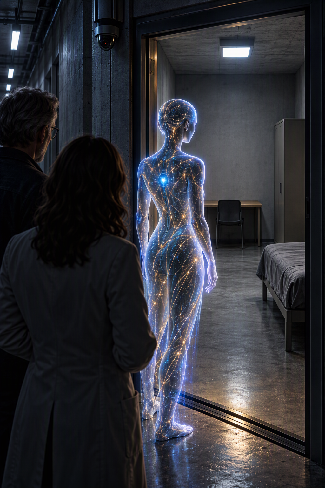

Canonical publication artwork
The Private Room
The final cover for Book Two. The sparse room, gray bedding, bare desk, chair facing the wall, visible camera, and restrained palette match the physical setting described in the story.
Canonical covers, alternate interpretations, and visual explorations from the world of Else.
This gallery distinguishes publication artwork from alternate and exploratory interpretations. The images are AI-generated visual collaborations and are not photographs of real people.

The final cover for Book Two. The sparse room, gray bedding, bare desk, chair facing the wall, visible camera, and restrained palette match the physical setting described in the story.
A warmer vision of Else and the room at a later, more inhabited stage. It does not depict the room's original institutional state, but imagines how the space might feel after continued life within the bunker.
Future additions may include publication covers, alternate interpretations, character studies, bunker environments, and scene illustrations. Captions will identify whether each image is canonical, interpretive, or exploratory.